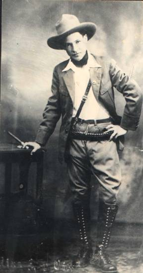

Universidad Nacional De Ingeniería
Universidad Nacional De Ingeniería

Augusto César Sandino dejó un legado político basado en la defensa firme de la soberanía nacional frente a la intervención militar de Estados Unidos entre 1927 y 1934. Organizó el Ejército Defensor de la Soberanía Nacional y demostró que la resistencia popular podía enfrentarse a una potencia extranjera, convirtiéndose en símbolo d el antiimperialismo en América Latina. Su pensamiento y ejemplo inspiraron posteriormente al Frente Sandinista de Liberación Nacional, que retomó su nombre, ideales y bandera como base de su proyecto revolucionario.
Sandino se transformó en un símbolo de dignidad y orgullo para el pueblo nicaragüense. Su imagen con sombrero alón representa la lucha campesina y la defensa de la patria, pasando de ser un líder guerrillero a héroe nacional reconocido. Su figura está presente en monumentos, murales y en la memoria histórica del país, convirtiéndose en un referente permanente de resistencia y soberanía dentro de la identidad cultural y política de Nicaragua.
El legado ideológico de Sandino se fundamenta en la justicia social, la defensa de los oprimidos y la unidad latinoamericana frente al imperialismo. Su pensamiento promovía la dignidad humana y la coherencia entre palabra y acción. Tras su asesinato en 1934 por órdenes de Anastasio Somoza García, su figura adquirió un carácter de mártir, fortaleciendo su ejemplo moral como símbolo de sacrificio, lucha y compromiso con el pueblo nicaragüense.